Recoveris в СМИ
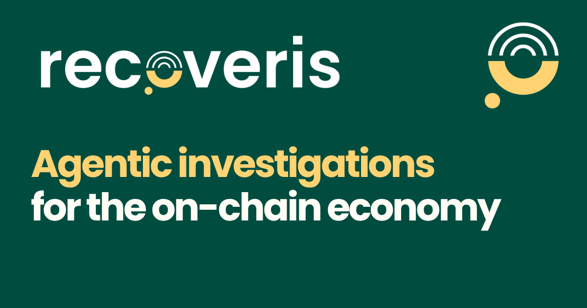
Помогает ли MiCA вернуть украденную криптовалюту? Что нужно знать жертвам и консультантам в ЕС
Помогает ли MiCA вернуть украденную криптовалюту в ЕС? Узнайте, какие правила для провайдеров действуют, что они не могут обратить, и какие шаги по-прежнему имеют значение.
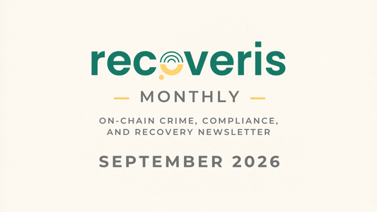
Recoveris Ежемесячно – сентябрь 2026
Гражданский путь в криптоделах, уроки сентябрьских расследований, CoTrace, наш семинар NCA/FCA и события октября.
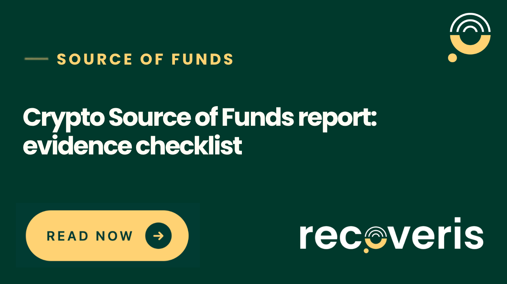
Отчет о происхождении средств в криптовалюте: контрольный список доказательств
Что должен включать отчет о криптовалютном источнике средств? Контрольный список доказательств для банковских проверок, записи бирж, прибыли от DeFi и истории сложных активов.
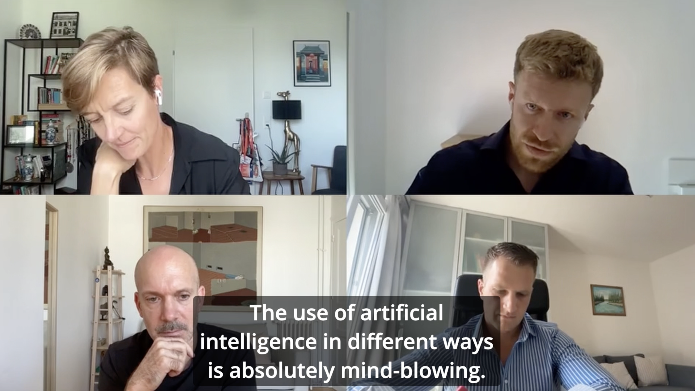
У криптовалютного возврата активов есть проблема со скоростью: некому позвонить
Восстановление криптоактивов происходит со скоростью блокчейна. Марцин Зараковски и Патрик Принц объясняют отслеживание, заморозку и разведывательный разрыв в Европе.
Почему я присоединился к Recoveris
Александер Гура объясняет, почему он присоединился к Recoveris, чтобы расширить услуги по соблюдению требований к цифровым активам, расследованиям и источникам средств для организаций.
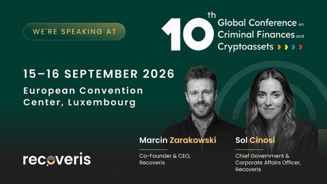
Recoveris на 10-й Глобальной конференции по преступным финансам и криптоактивам
Recoveris присоединяется к Европолу, Базельскому институту и UNODC в Люксембурге на 10-й Глобальной конференции по финансовым преступлениям и криптоактивам, 15-16 сентября 2026 года.
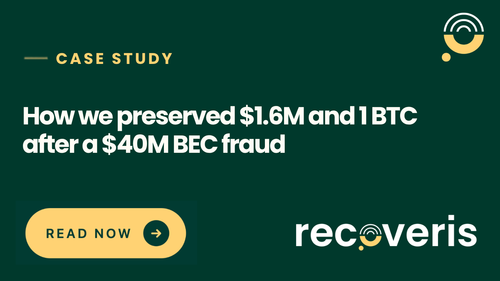
Как мы сберегли 1,6 млн долларов США и 1 BTC после мошенничества BEC на 40 млн долларов США
Анонимный корпоративный случай фишинга, показывающий, как средства от банковского мошенничества отслеживались через стейблкоины, моментальные обмены, Биткойн, Эфириум и XRP.
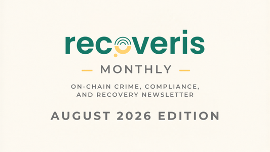
Recoveris Ежемесячно – август 2026
Предварительный инцидент с кошельком на $116 млн, манипулированные залоги, ложные депозиты, ключи кошелька, доказательства источника средств и преступление с использованием ИИ.
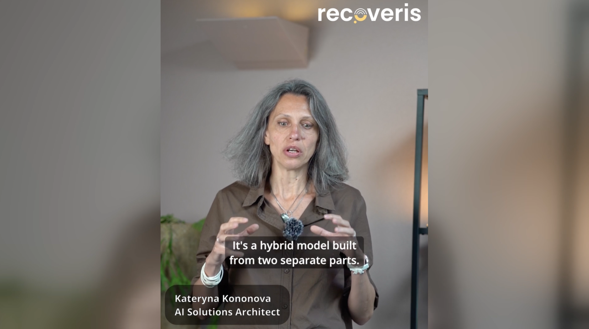
Почему модель, стоящая за нашим AI-следователем, является прозрачной
Почему Recoveris создала модель с открытым доступом для расследования блокчейна: объяснимую, повторяемую, проверенную на исследованных случаях. Объясняет Катерина Кононова.
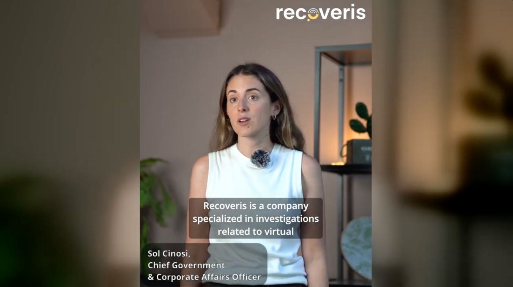
Как Recoveris работает с правоохранительными органами по делам, связанным с криптовалютой
Как Recoveris работает с правоохранительными органами по делам, связанным с криптовалютой: отслеживание, мониторинг кошельков, блокировка адресов и почему агентство сохраняет право на проведение расследований.
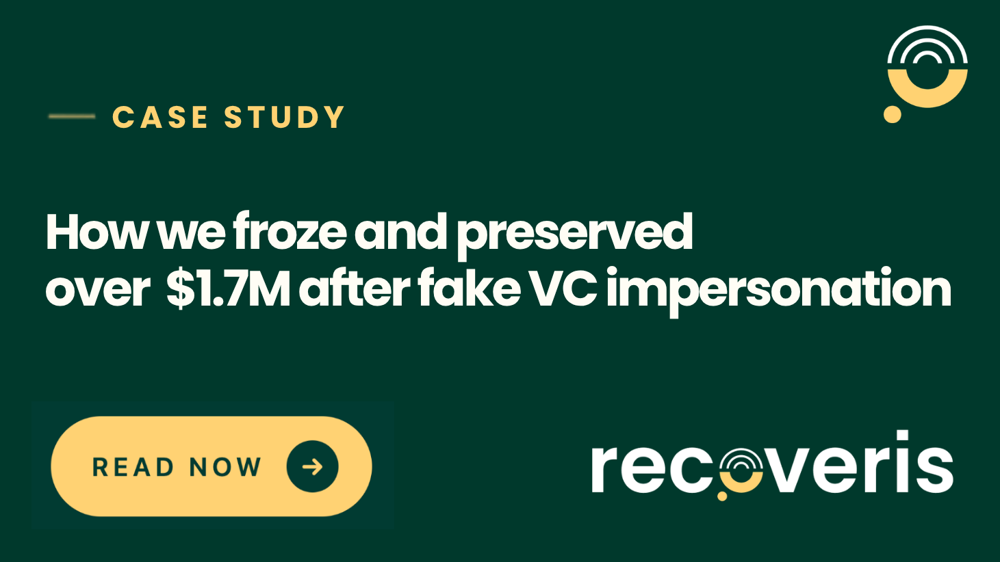
Как мы заморозили и сохранили более 1,7 млн долларов США после подделки личности венчурного инвестора
Анонимизированное исследование двух связанных краж с участием поддельных венчурных капиталов и межсетевого реагирования, которое заморозило или сохранило более 1,7 миллиона долларов США.
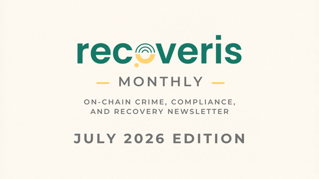
Recoveris Ежемесячно – июль 2026
$85 млн в криптоэксплойтах, атаках на управление, объяснение окон заморозки стейблкоинов, AI-следователь Recoveris и рабочие процессы атрибуции блокчейна.
Седьмое целевое обновление ФАТФ передает слой заморозки частному сектору
Седьмое целевое обновление ФАТФ называет государственно-частное партнерство важным для замораживания незаконных виртуальных активов. Что это означает на практике для поставщиков услуг виртуальных активов (VASPs) и следователей.
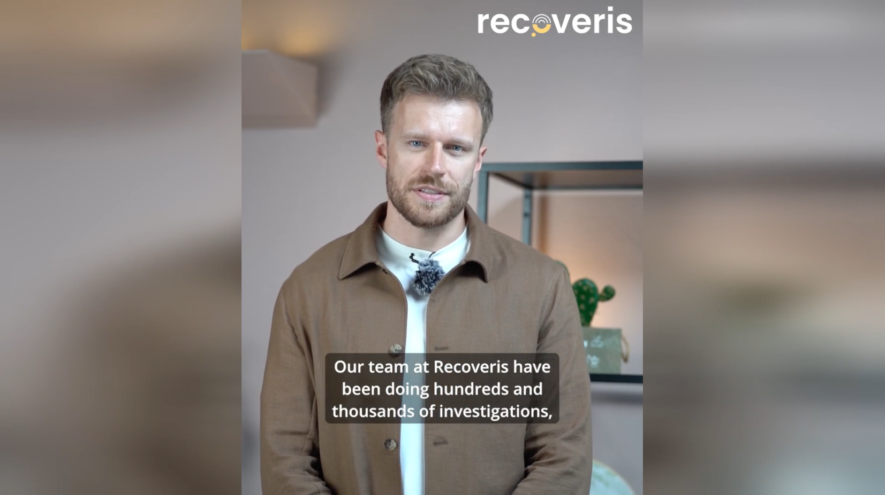
Почему Recoveris создаёт ИИ-следователя
Спрос на расследования в области блокчейна превзошел возможности экспертного пула. Генеральный директор Марцин Зараковский о CoTrace, ИИ-следователе, и о том, почему комплаенс не может оставаться управляемым исключительно людьми.
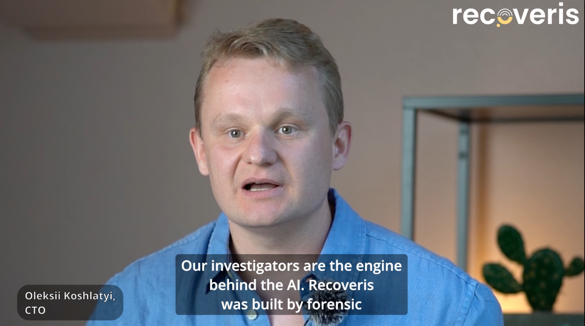
ИИ за Recoveris: исследователь с открытым процессом работы, нейтральный к производителям, созданный судебными экспертами
Как Recoveris создает прозрачного, независимого от поставщика ИИ-следователя, обученного на реальных кейсах и работающего в замкнутой среде. CTO Алексей Кошлатый объясняет.
Как EY и Recoveris поддерживают подключение богатства, происходящего из криптовалюты
Иллюстративный сценарий частного банка, показывающий, как EY DLA объединяет анализ источников средств, проверку контроля за кошельком и оценку рисков по ПОД/ФТ.
Когда Blockchain Разведка недостаточна: доказательные проблемы приказов о заморозке криптокошельков
Технология блокчейн-аналитики может отслеживать криптовалюту между кошельками и биржами, но может ли она доказать право собственности? Фред Бюре (Recoveris) и Сэм Хили (SPH Legal) рассматривают вопросы атрибуции, контроля и доказательств в делах о замораживании криптокошельков в Великобритании.
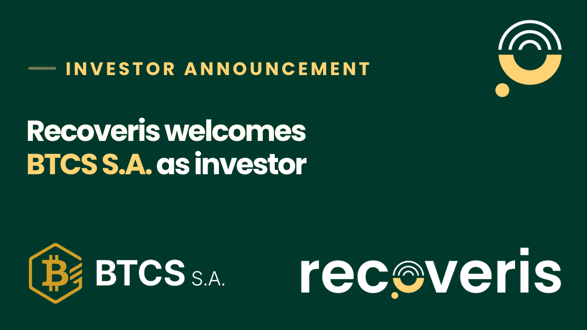
Recoveris приветствует BTCS S.A. в качестве инвестора
Recoveris подписывает инвестиционное и дистрибьюторское соглашение с BTCS S.A., первой зарегистрированной компанией цифровых активов в Польше.
Recoveris Ежемесячно – июнь 2026
46 миллионов долларов в криптовалютных эксплойтах, изъятие Tether на 344 миллиона долларов, объяснение утверждения токенов и мультиподписей, AURA и случай трансграничного восстановления.
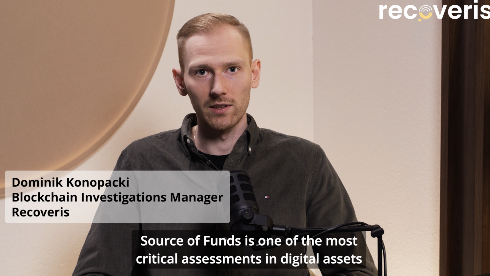
Где автоматизированный анализ источников средств оказывается недостаточным
Большинство отчётов об источниках средств останавливаются на выводе инструмента. Где автоматизированный анализ СтАТ (Источник Funds) не справляется с кросс-цепочными, DeFi и монетами с функцией конфиденциальности, и какая документация требуется для суда.
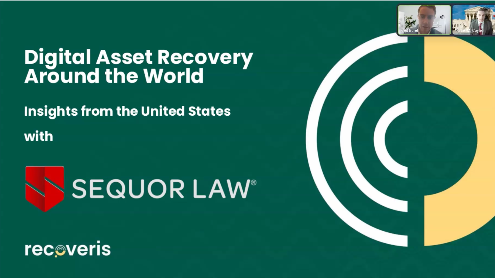
Восстановление криптовалюты в Соединённых Штатах: аресты до вынесения решения, альтернативное уведомление и трансграничная реальность
Как жертвы криптомошенничества возвращают активы в США вместе с Дэниелом Койлом из Sequor Law: о сервисе, заморозке, удержании и трансграничном принудительном исполнении.
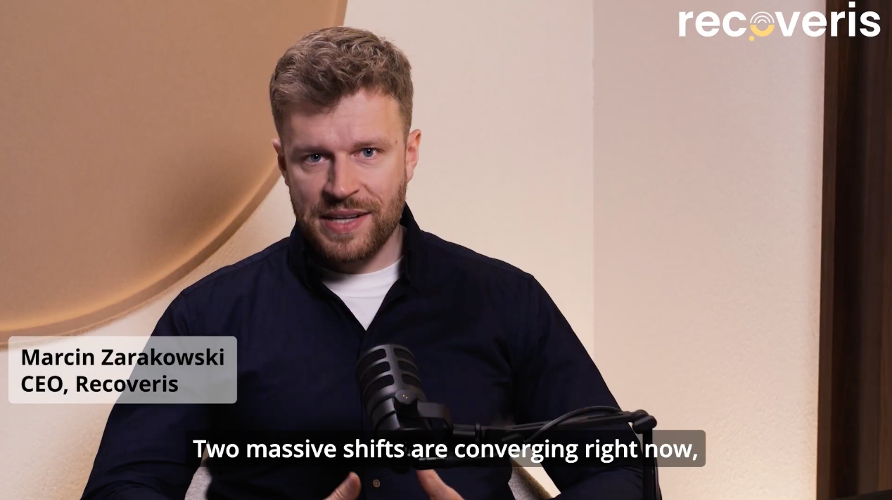
Разрыв в соблюдении норм в агентской ончейн-экономике и почему мы создаём решения для этого сейчас
Ценность перемещается в блокчейн, и агенты ИИ скоро будут совершать транзакции на машинной скорости. Recoveris разрабатывает ИИ для цифровых активов, отвечающий требованиям комплаенса.
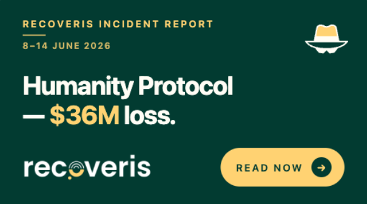
Чему нарушение мультиподписи на $36 млн в Humanity Protocol учит команды институционального хранения
Протокол Humanity потерял около 36 миллионов долларов, когда все ключи 3 из 6 мультиподписей хранились на одном ноутбуке. Урок по хранению для учреждений, владеющих цифровыми активами.
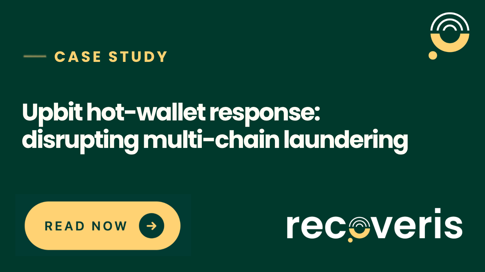
Ответ горячего кошелька Upbit: нарушая многоцепочечное отмывание
Кейс по идентификации предсказательных кошельков и параллельной координации после того, как украденные активы Solana начали перемещаться между цепочками и сервисами.
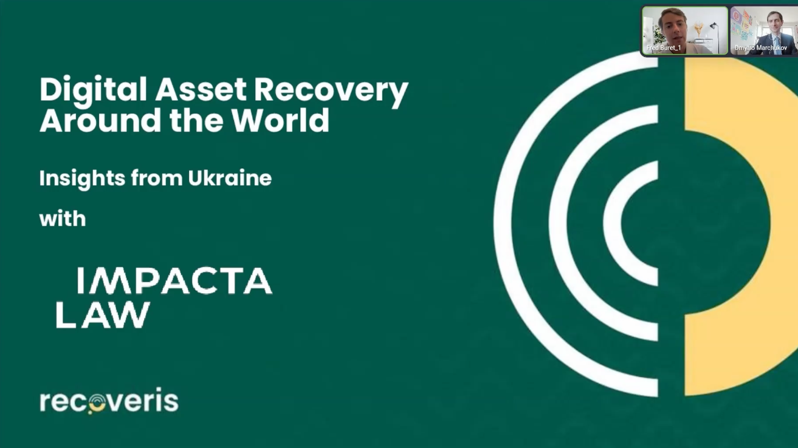
Восстановление криптовалюты в Украине: валютный контроль военного времени, криминальные пути восстановления криптоактивов и присущая проблема волатильности
Дмитрий Марчуков из Impacta Law о восстановлении криптовалюты в Украине: валютный контроль военного времени, путь через уголовное законодательство для восстановления криптоактивов, сотрудничество с биржами и присущая волатильность активов.
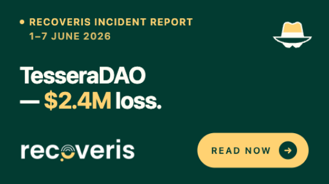
Отслеживание утечки TesseraDAO: окно восстановления до Tornado Cash
TesseraDAO потеряла 2,4 миллиона долларов из-за украденного ключа администратора 1 июня. Средства попали в Tornado Cash, но именно след до миксера является тем местом, где строится случай для восстановления.
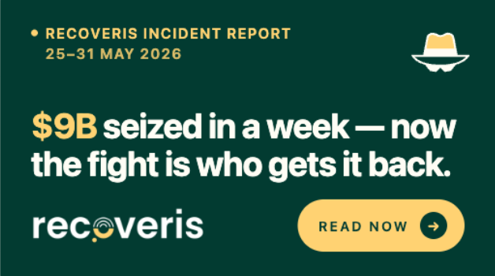
Дело Tether на 344 млн долларов: что означает изъятие 9 миллиардов долларов за неделю для юристов по взысканию активов
Агентства США изъяли около 9 миллиардов долларов в криптовалюте за одну неделю. Битва за 344 миллиона долларов Tether показывает, почему изъятие и возмещение ущерба жертвам — это два отдельных юридических процесса.
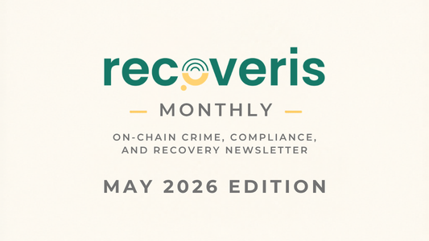
Recoveris Ежемесячно – май 2026
$55 млн в криптоинцидентах, взыскание в размере $701 млн, миксеры объяснены для юристов, расследование ZondaCrypto и швейцарское восстановление $10,5 млн.
Почему умные люди не защищены от криптомошенничества
Криптовалютные мошенничества нацелены на то, как мозг человека обрабатывает доверие, срочность и потерю. Recoveris разъясняет пять когнитивных механизмов, которыми пользуются мошенники, и почему один только интеллект не защитит вас.
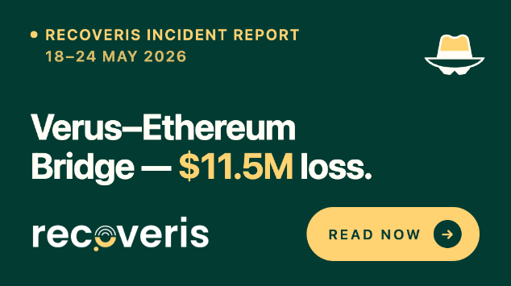
Еженедельный отчет о происшествиях: 18-24 мая 2026 года
Мост Verus потерял 11,58 млн долларов 18 мая 2026 года из-за той же разницы между исходным и целевым значением, которая погубила Wormhole и Nomad. План действий по реагированию запускает второе перемещение средств.
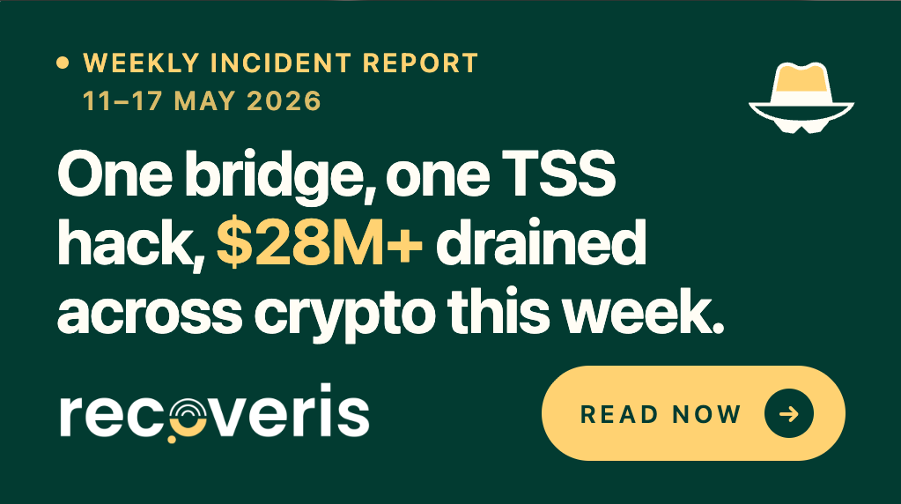
Еженедельный отчет о происшествиях: 11–17 мая 2026 года
Более $28 млн утекли в ходе 5 инцидентов с 11 по 17 мая: эксплуатация моста Verus-Ethereum, компрометация TSS THORChain, атака на цепочку поставок node-ipc npm, Transit Finance, мошенничество Roaring Kitty RKC. Еженедельный разбор инцидентов DeFi от Recoveris.
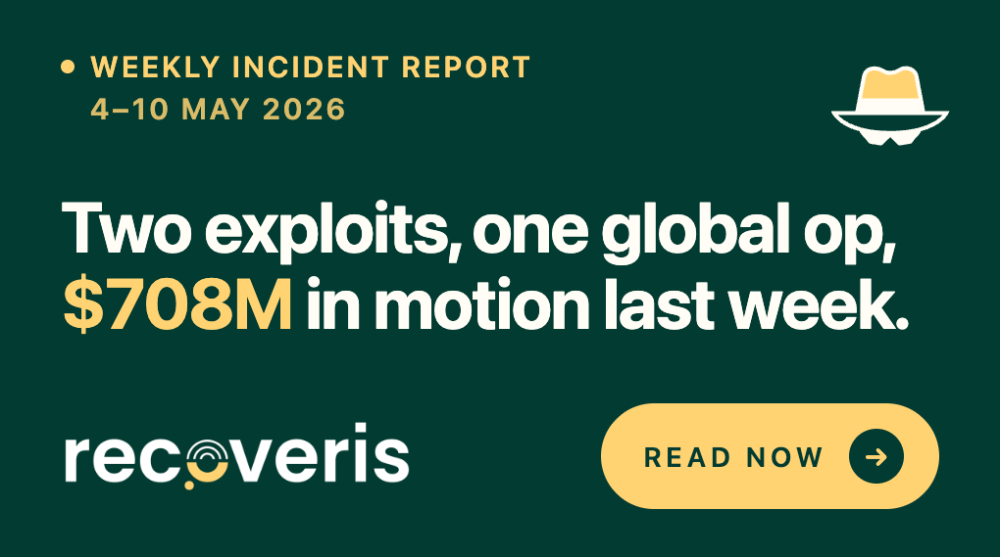
Еженедельный отчет о происшествиях: 4–10 мая 2026 года
Два эксплойта в сфере DeFi вывели $7,3 млн, а международная операция под руководством ФБР заморозила $701 млн в криптовалюте, связанной с мошенничеством, с 4 по 10 мая. Еженедельная разбивка от Recoveris.
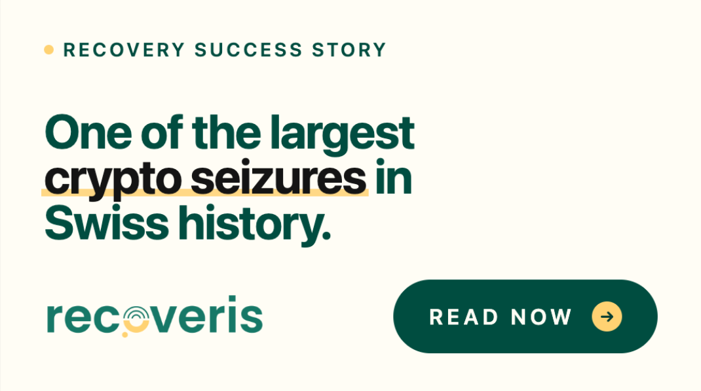
Как наша команда помогла вернуть 10,5 млн долларов от швейцарской инвестиционной аферы
Следователи Recoveris проследили и заморозили 10,5 млн долларов США от швейцарской инвестиционной аферы, в одной из крупнейших криптовалютных операций по возврату средств в истории Швейцарии.

Первые 24 часа после кражи криптовалюты: что делать прямо сейчас
Что делать в первые 24 часа после потери криптовалюты из-за кражи или мошенничества. Практический чек-лист от исследователей блокчейна компании Recoveris.
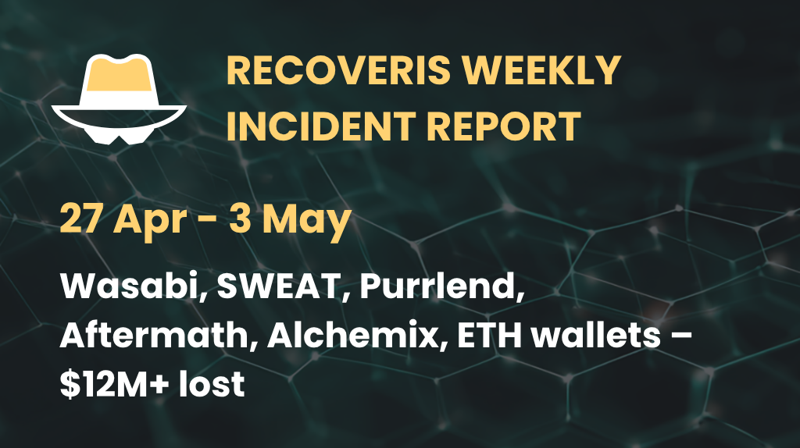
Еженедельный отчет о происшествиях: 27 апреля – 3 мая 2026 года
Более 12 млн долларов утекли с 27 апреля по 3 мая в 6 инцидентах: Wasabi, SWEAT, Purrlend, Aftermath, Alchemix, неактивные кошельки ETH. Еженедельная разбивка по Recoveris.
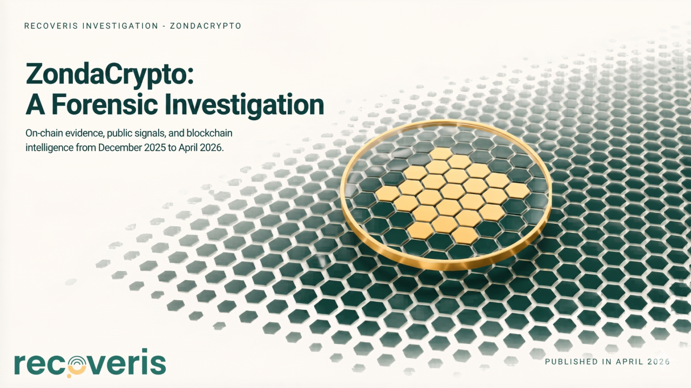
Дело ZondaCrypto: как расследование в блокчейне спровоцировало один из крупнейших криптоскандалов в Европе
Как ончейн-анализ Recoveris выявил падение 99,7% горячего кошелька Zondacrypto и что этот случай показывает о прозрачности бирж в ЕС.
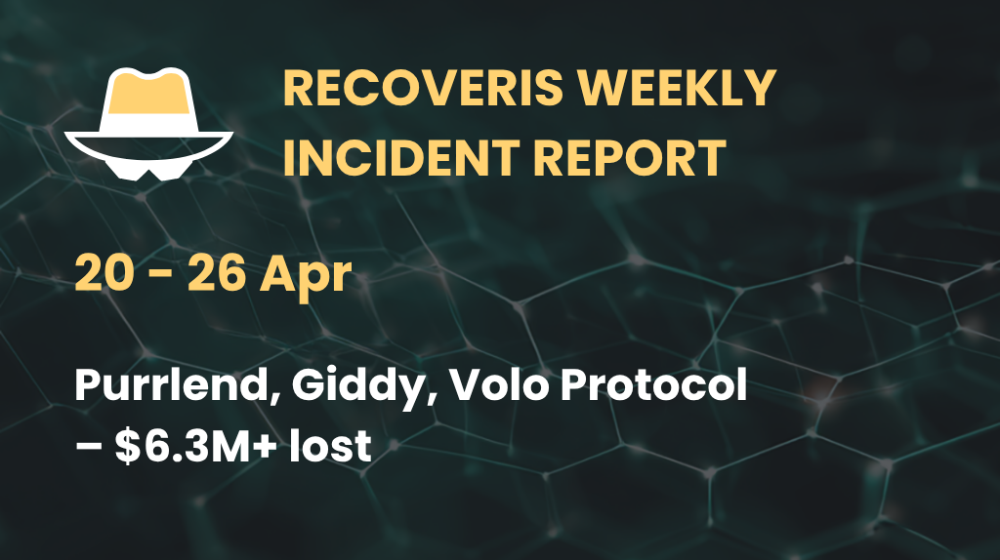
Еженедельный отчет о происшествиях: 20–26 апреля 2026 года
Более $6,3 млн утекло в ходе 3 инцидентов с 20 по 26 апреля: захват роли мультиподписи Purrlend, ошибка проверки подписи Giddy, компрометация ключа хранилища Volo Protocol Sui. Еженедельный отчет об инцидентах от Recoveris.
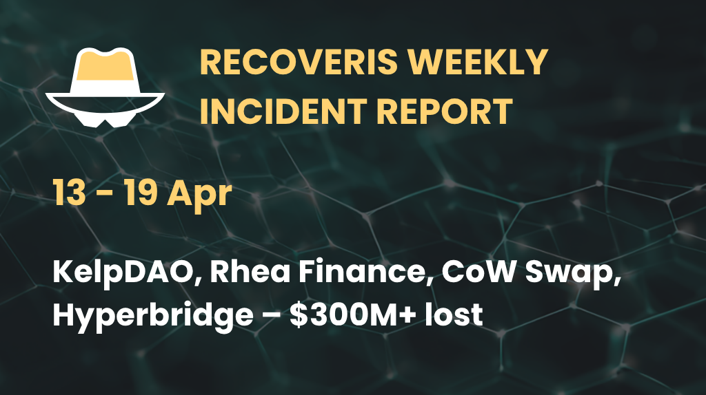
Еженедельный отчет о происшествиях: 13–18 апреля 2026 года
Более $300 млн утекли в результате 4 инцидентов с 13 по 18 апреля: эксплуатация моста KelpDAO, взлом оракула Rhea, DNS-угон CoW Swap, выпуск DOT через Hyperbridge. Еженедельная разбивка от Recoveris.
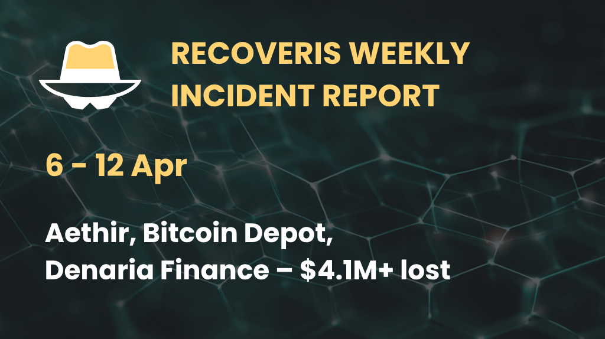
Еженедельный отчет о происшествиях: 6–12 апреля 2026 года
Более $4,1 млн утрачено в результате 3 инцидентов с 6 по 12 апреля: кибератака на Bitcoin Depot, эксплойт моста Aethir, взлом Denaria Finance. Еженедельная сводка от Recoveris.
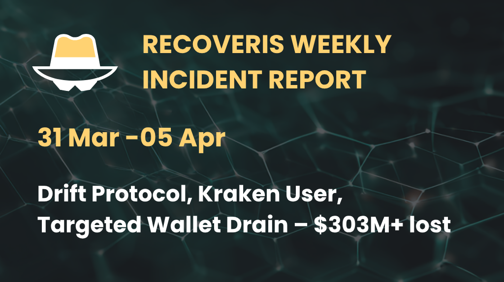
Еженедельный отчет о происшествиях: 31 марта – 5 апреля 2026 года
Более $303 млн утрачено в результате 3 инцидентов: эксплойт протокола Drift на $285 млн, кража $18,2 млн через социальную инженерию и автоматическое опустошение кошелька на $72 тыс. Еженедельная разбивка инцидентов от Recoveris.
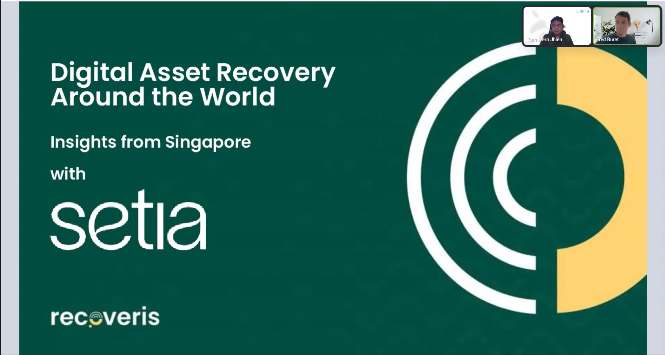
Восстановление криптовалюты в Сингапуре: инструменты общего права, оценка токенов и что требуется для восстановления активов в ведущем азиатском центре цифровых активов
Восстановление криптовалюты в Сингапуре: лицензирование DPT, инструменты общего права, проблемы оценки токенов и что на самом деле требует восстановление в крупнейшем финансовом центре Юго-Восточной Азии. С Верном Джиеном Ямом из Setia Law.
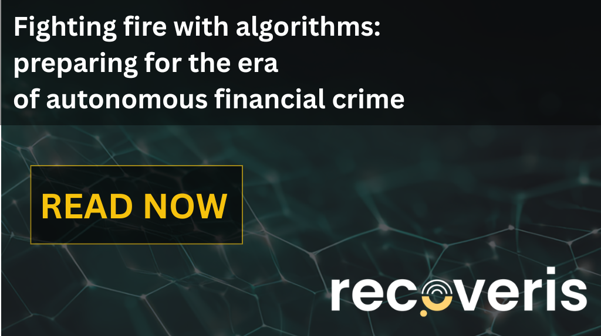
Борьба с огнём с помощью алгоритмов: подготовка к эре автономных финансовых преступлений
Эра автономной финансовой преступности наступила. Узнайте, как ИИ-агенты трансформируют отмывание денег на блокчейне и как Recoveris использует защиту на основе ИИ.
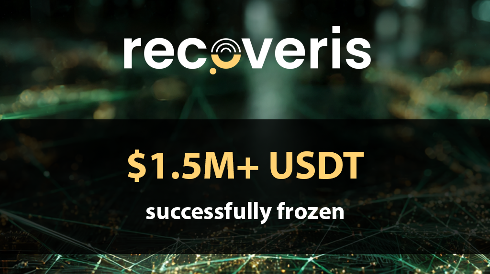
Расследование Recoveris приводит к заморозке более $1,5 млн в USDT после того, как Tether внесла кошельки в черный список
Recoveris отследил и идентифицировал кошельки с более чем 1,5 миллиона долларов США в USDT, координировался с полицией Гонконга и обеспечил постоянное внесение в черный список Tether — заморозив украденные стейблкоины, прежде чем они могли быть перемещены вне досягаемости.
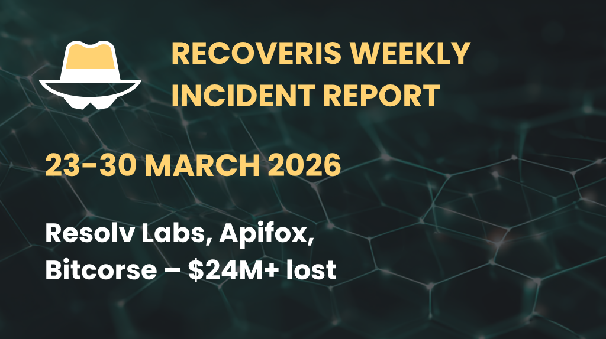
Еженедельный отчет о происшествиях: 23–30 марта 2026 года
Более $24 млн утекло в ходе 3 инцидентов с 23 по 30 марта: майнинг нестабильной стейблкоины без обеспечения через компрометацию ключей, кража учетных данных в цепочке поставок и эксплойт пула DeFi. Еженедельная разбивка по Recoveris.
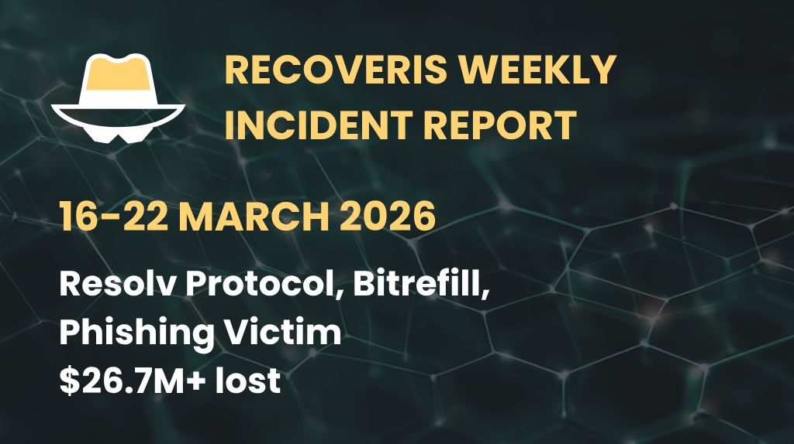
Еженедельный отчет о происшествиях: 16–22 марта 2026 года
Более $26,7 млн было похищено в ходе 3 инцидентов с 16 по 22 марта: катастрофическое нарушение инфраструктуры с чеканкой стабильной монеты без резервов, подозреваемое государственное хакерское ограбление горячего кошелька и фишинговая атака с использованием газовых разрешений.
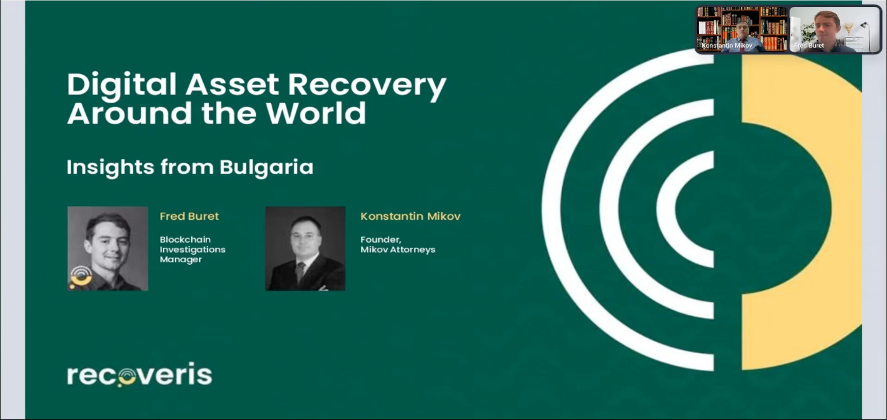
Восстановление криптовалюты в Болгарии: уголовные суды, MiCA и что на практике действительно требуется для восстановления
Практические советы по восстановлению цифровых активов в Болгарии из нашего последнего вебинара с Константином Миковым из Mikov & Attorneys, охватывающего регистрацию VASP, MiCA, уголовное судопроизводство и ответственность бирж.
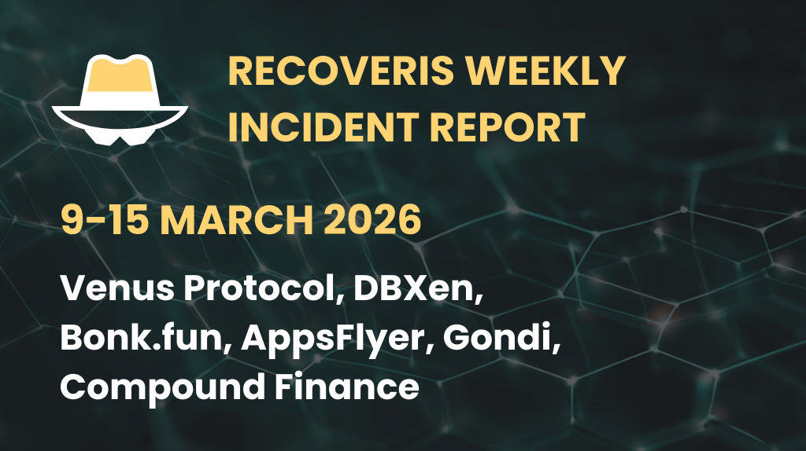
Еженедельный отчет о происшествиях: 9–15 марта 2026 года
Более $4,1 млн утекло в ходе шести инцидентов с 9 по 15 марта: эксплойты с мгновенными займами, захват фронтенда, атака на цепочку поставок и кража NFT через эскроу. Еженедельная разбивка инцидентов по Recoveris.
Демократизация обмана: как генеративный ИИ снижает порог для криптопреступлений
Генеративный ИИ индустриализирует криптомошенничество, снижая технические барьеры для злоумышленников. Узнайте, как развивается обман с применением ИИ и как на это реагирует Recoveris.

Предупреждение о скамах с «возвратом»
Официальное уведомление службы безопасности о попытках выдавать себя за Recoveris. Узнайте, как распознавать мошеннические домены и выявлять признаки вторичных схем восстановления, чтобы защитить свои цифровые активы.
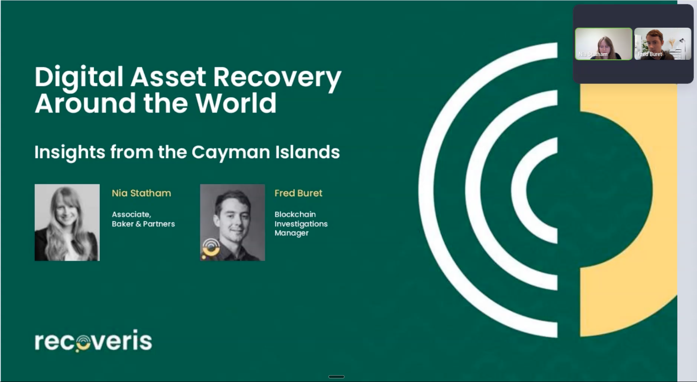
Каймановы острова как центр цифровых активов: выводы из нашего последнего вебинара
Изучите практические аспекты восстановления цифровых активов на Каймановых островах, включая фондовые компании, DAO, юридические структуры и проблемы обеспечения исполнения решений вместе с экспертами Baker & Партнёры и Recoveris.
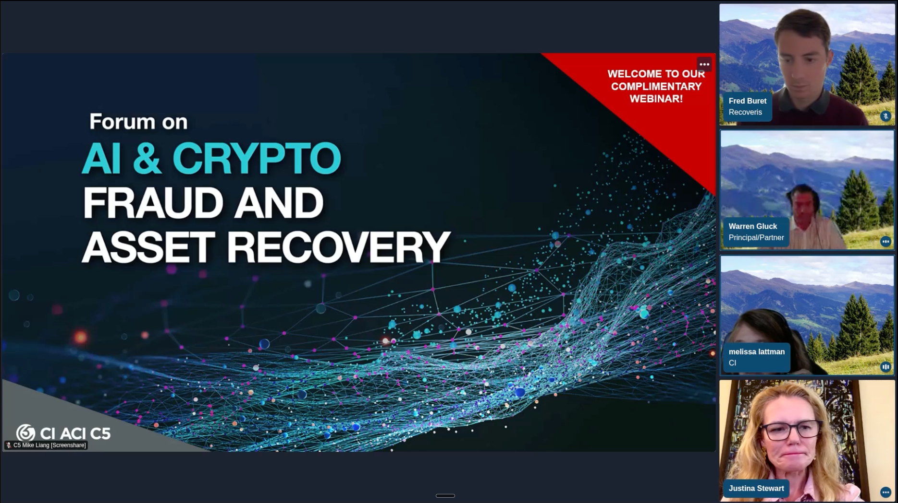
Проблемы отслеживания криптовалют, связанных с государством, и трансграничного восстановления: ключевые выводы вебинара C5
Фред Бюрет присоединяется к международной юридической панели, обсуждающей передовые методы отслеживания криптовалют, рамки восстановления и проблемы юрисдикции в делах о цифровых активах.
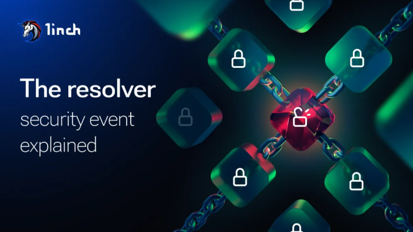
Как Recoveris проследил $2,2 млн через Tornado Cash
Кейс-стадии продвинутой блокчейн-криминалистики, проведённой компанией Recoveris для 1inch, которая позволила отследить $2,2 млн через Tornado Cash.
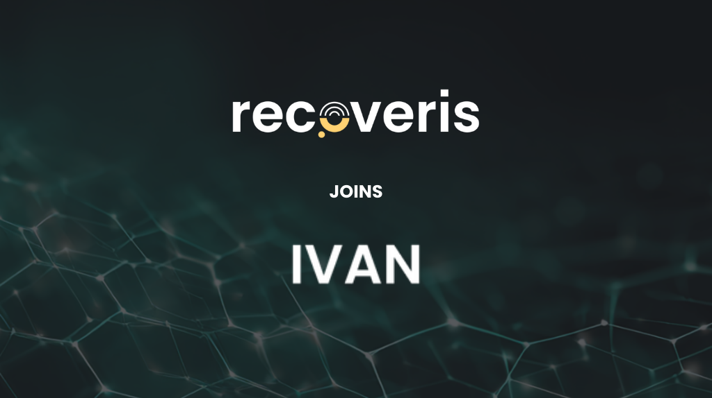
Recoveris присоединяется к IVAN: Усиленная трансграничная координация для расследований цифровых активов
Recoveris присоединяется к IVAN, государственно-частному партнерству правоохранительных органов США по борьбе с незаконным оборотом виртуальных активов вместе с крупными агентствами и партнерами из отрасли.
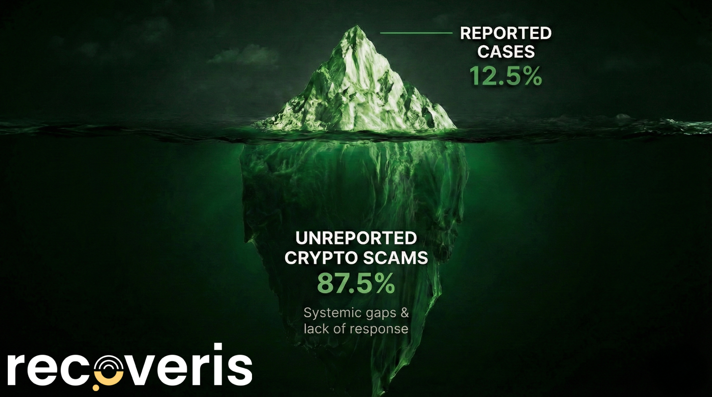
Можно ли вернуть украденную криптовалюту, если вы никогда не сообщали о преступлении? Почему большинство жертв молчат
Большинство жертв криптомошенничества никогда не сообщают о своих потерях. Узнайте, почему молчание так распространено, что данные показывают о недоучете заявлений, и как Recoveris все еще может помочь вам действовать, даже если вы еще не сообщили о похищенной криптовалюте.
Лидеры Recoveris представляют систематические разведывательные рамки комиссии по криптовалютам Польского парламента
Наш генеральный директор Марцин Зараковский и руководитель продукта Роман Бьеда обратились к Польской парламентской комиссии по криптовалютным активам и технологии блокчейн, представив презентацию о том, как Польша могла бы систематически бороться с мошенничеством с криптовалютами.
Можно ли вернуть украденную криптовалюту? Как вернуть украденную криптовалюту в 2026 году
Да, украденную криптовалюту можно вернуть. Узнайте, как вернуть украденную криптовалюту, что делать сразу после взлома криптокошелька и как на самом деле работает процесс восстановления.

Использование доказательств на блокчейне для восстановления цифровых активов: руководство для юристов по атрибуции криптовалюты
Узнайте, как юристы используют доказательства на блокчейне в суде для восстановления цифровых активов. Экспертное руководство по отслеживанию криптовалюты, установлению причастности и подготовке дел, готовых к защите ответчика.
![Дела по возврату цифровых активов: что юристы должны спрашивать в первую очередь [Руководство 2026]](../images/Блог-article-Fred.png)
Дела по возврату цифровых активов: что юристы должны спрашивать в первую очередь [Руководство 2026]
Юридическое руководство по делам о возврате цифровых активов. Узнайте основные вопросы, которые юристы должны задавать клиентам в случаях кражи, взлома и мошенничества с криптовалютой. Экспертные судебно-аналитические советы.
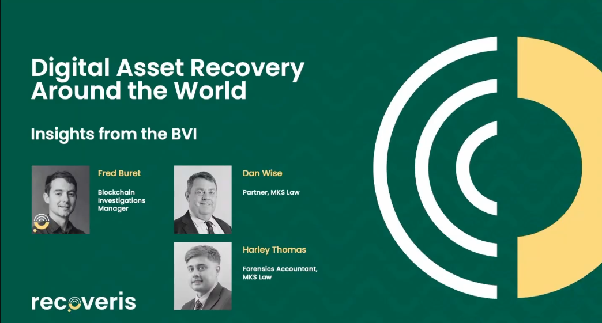
Восстановление цифровых активов на Британских Виргинских островах: навигация по высокорискованным криптоконфликтам
Британские Виргинские острова стали юрисдикцией выбора для крупнейших банкротств и самых сложных споров. Наш последний вебинар раскрывает, почему традиционные правовые инструменты здесь прекрасно работают с цифровыми активами и как устоявшаяся инфраструктура юрисдикции продолжает привлекать дела по криптовалютной реструктуризации.
Отслеживание и восстановление незаконной криптовалютной деятельности - информация с вебинара Nominis-Recoveris
Как автоматизированные судебно-экспертные рабочие процессы и поведенческая аналитика трансформируют восстановление цифровых активов. Инсайты по расследованиям с использованием ИИ и критические факторы, определяющие успех восстановления.
Восстановление цифровых активов в Польше: навигация по криптовалютному транзитному хабу Европы
Высокий уровень принятия криптовалют в Польше и минимальные правила регулирования сделали её транзитным центром для незаконных средств. Наш вебинар объясняет, почему уголовное преследование превосходит гражданское судопроизводство в восстановлении активов в этой уникальной юрисдикции, и как жертвы могут потенциально вернуть средства в течение одного года.
$950 тыс. / 330 ETH заморожены и защищены для восстановления в деле о взломе протокола DeFi
Мы успешно отследили и обеспечили 330 ETH для клиента, пострадавшего от эксплуатации протокола DeFi на миллионы долларов, демонстрируя, как быстрый судебно-экспертный ответ и скоординиренные действия правоохранительных органов позволяют эффективно возвращать активы.
Recoveris сотрудничает с Provenance для укрепления инфраструктуры соответствия требованиям при расследовании цифровых активов
Recoveris сотрудничает с Provenance, специализированной фирмой по комплаенсу, которая обслуживает более 323 клиентов в сфере цифровых активов в более чем 18 юрисдикциях. Сотрудничество укрепляет инфраструктуру комплаенса, поддерживая расследования в блокчейне для VASP, криптофондов и DeFi-протоколов.
Recoveris присоединяется к ICC FraudNet в качестве стратегического партнера
Recoveris вступает в стратегическое партнерство с ICC FraudNet, объединяя судебную экспертизу блокчейна с мировым опытом возврата активов. Это предоставляет сети юристов по возврату активов ICC FraudNet, охватывающей 81 страну, прямой доступ к передовой информации на блокчейне и документам, приемлемым в суде, для дел о мошенничестве, связанном с криптовалютой.
Recoveris сотрудничает с GreyList Trace, объединяя информацию из цепочки блоков и вне цепочки
Вместе с GreyList Trace мы объединяем блокчейн-форензику с анализом электронной почты, связывая внецепочечные идентичности с деятельностью в цепочке с помощью передовых методов разведки.
Мы объединяем усилия с CipherLabs для развития инфраструктуры безопасности Web3
Recoveris объединяется с CipherLabs для создания более устойчивой архитектуры безопасности для цифровых активов, сочетая проактивную защиту пользователей с специализированными возможностями реагирования.
Когда Лувр ограбят, шансы на возврат составляют 2-6%. У нас достигается 30% уровень заморозки.
Ставки заморозки цифровых активов Recoveris достигают 30%, в то время как шансы на возврат утерянного искусства составляют от 2% до 6%. Узнайте, почему экспертная аналитика блокчейна обеспечивает значительно лучшие показатели возврата активов по сравнению с традиционными методами расследования краж.
Банкомат в этом магазине может снять ваши сбережения за минуты
Расследование CNN раскрывает, как мошенничество с крипто-банкоматами за шесть месяцев лишило американцев 240 миллионов долларов через выдачу себя за официальных лиц, вымогательство и мошенничество с технической поддержкой. Узнайте методы атак и почему восстановление средств настолько сложно.
Убытки от взломов криптовалют упали на 37%, но у следователей появляется меняющийся ландшафт угроз
Потери в криптовалюте снизились на 37% в третьем квартале, но ситуация с угрозами меняется. Операционные компрометации теперь обгоняют эксплуатацию кода, создавая новые судебно-экспертные задачи для следователей.
Реальность жертв криптомошенничества: нам нужны системные изменения
Сложные расследования блокчейна дорогие, оставляя многих жертв мошенничества без помощи. Мы создаем технологии, чтобы сделать восстановление доступным, и призываем к системным изменениям в работе правоохранительных органов.
Координированный ответ трансформирует борьбу с криптопреступностью: крупные возвраты демонстрируют силу стратегических партнерств
Стратегические партнёрства между правоохранительными органами, частным сектором и судебно-экспертными специалистами трансформируют борьбу с криптопреступлениями, с недавними крупными изъятиями со стороны Королевской канадской полиции, израильской разведки и Tether.
Recoveris присоединяется к глобальной разведывательной сети Operation Crypto Shield
Recoveris присоединяется к Глобальной разветку сети Operation Crypto Shield, первой многоагентственной операции, посвященной борьбе с угрозами, связанными с криптовалютой, через обмен разведданными между государственным и частным секторами.
Recoveris AG привлекает финансирование в размере 1 млн швейцарских франков для создания системы управления блокчейн-расследованиями на основе ИИ
Recoveris объявила о закрытии стратегического раунда финансирования на сумму 1 млн швейцарских франков. Раунд возглавила компания VerifyVASP, сингапурское лидирующее решение для соблюдения Travel Rule, при участии дополнительных стратегических ангельских инвесторов.
Recoveris присоединилась к Глобальному совету по блокчейну (GBBC)
Recoveris присоединяется к Глобальному совету по блокчейн-бизнесу (GBBC), чтобы внести специализированные знания в области судебной экспертизы и восстановления цифровых активов в организацию с более чем 500 участниками, продвигающую внедрение блокчейна в 124 юрисдикциях.
Recoveris присоединяется к FinTech Poland для продвижения безопасности цифровых активов
Recoveris присоединяется к FinTech Poland для продвижения безопасности цифровых активов и соблюдения нормативных требований в растущей финтех-экосистеме Польши, устанавливая связи с ключевыми финансовыми учреждениями и регулирующими органами для поддержки институционального внедрения.
Стратегические изменения в руководстве ускоряют эволюцию Recoveris в технологически ориентированную блокчейн-разведку
Ключевые изменения в руководстве с назначением нового руководителя Продукта и руководителя Расследований, что отражает нашу эволюцию от расследований, проводимых экспертами, к решениям для организации рабочего процесса расследований и технологиям блокчейн-аналитики с искусственным интеллектом.
Recoveris сотрудничает с Hacken в качестве специализированного партнера по судебной экспертизе и восстановлению активов
Recoveris объединяется с Hacken, чтобы предоставлять защиту цифровых активов, сочетая мониторинг на основе искусственного интеллекта с возможностями судебного восстановления. Это создает комплексную безопасность для более чем 1 500 блокчейн-организаций через обнаружение угроз и восстановление активов.
Recoveris сотрудничает с BlackStorm Intel для объединения цифровой и физической безопасности в web3
Recoveris сотрудничает с BlackStorm Intel, чтобы предоставлять безопасность web3, сочетая блокчейн-форензику с физической разведкой. Это позволяет противостоять растущей угрозе физических атак на владельцев криптовалюты, обеспечивая при этом реальные услуги по проверке и защите.
Recoveris выбран для швейцарской национальной стартап-команды
Recoveris выбран в число 10 самых перспективных стартапов для программы Swiss National Startup Team's 2025 Venture Leaders в области финтеха всего через три месяца после основания. Создает отраслевой стандарт для расследований в блокчейне и восстановления цифровых активов.
Вне восстановления: мы строим будущее блокчейн-интеллекта
За пределами восстановления криптовалют: как Recoveris создает инфраструктуру интеллектуальной безопасности цифровых активов. Узнайте о нашей трехстолповой структуре, трансформирующей расследования в блокчейне.
Почему для работы с блокчейн-интеллектом и восстановления требуется объединение закона, технологий и правоприменения
Восстановление цифровых активов требует скоординированной экспертизы в области технической криминалистики, правовых рамок, правоохранительных органов и комплаенса. Узнайте, почему междисциплинарные команды превосходят подходы с одним профилем.
Физические нападения на держателей криптовалюты растут во всем мире
Физические «атаки с гаечным ключом», направленные на владельцев криптовалюты, растут по всему миру: в 2025 году было зафиксировано 22 случая. Исчезновение 74-летнего мужчины подчеркивает, как преступники используют похищения и насилие, выходя за рамки исключительно онлайн-угроз.
Да, заморозка криптоактивов возможна, и вот как: от мифа к реальности
Многие считают, что украденные криптоактивы навсегда потеряны после попадания на блокчейн. Recoveris демонстрирует, как судебная разведка, юридическая координация и стратегическое правоприменение могут отслеживать, замораживать и возвращать цифровые активы через централизованные точки контроля и рамки соблюдения требований.
Романтические мошенничества эволюционируют в сложные трансграничные сети отмывания денег
Романтические аферы эволюционировали в сложные трансграничные схемы отмывания средств на сумму 36,9 миллиона долларов с использованием фиктивных компаний и криптовалютных переводов через несколько юрисдикций. Новое дело Министерства юстиции показывает, почему специализированная судебно-экспертная разведка необходима для отслеживания сложных международных преступных синдикатов.
За пределами автоматизированных инструментов: как Recoveris обеспечивает источники средств Разведка
Стандартные инструменты блокчейна предоставляют неполный анализ SOF, останавливаясь на мостах с потенциальными санкционированными организациями за их пределами. Экспертные следователи Recoveris предоставляют всестороннюю кросс-чейн разведку для случаев высокой значимости в области соответствия.
Человеческая задняя дверь: северокорейцы проникают в компании через фальшивые собеседования, в то время как традиционная безопасность не замечает эти угрозы
Агенты Северной Кореи проникают в крипто-компании через ложные собеседования, используя европейских посредников и инструменты ИИ. Как внутренние угрозы украли 1,34 млрд долларов в 2024 году и почему традиционная безопасность не может их обнаружить.
Обновление FATF по виртуальным активам 2025: ключевые выводы
Группа разработки финансовых мер борьбы с отмыванием денег (FATF) выпустила свой обзор за июнь 2025 года по глобальной реализации стандартов ПОД/ФТ для виртуальных активов и поставщиков услуг виртуальных активов (VASPs).
Когда доверие становится оружием: как известные криптовалютные бренды используются в своих целях
Доверие становится оружием, когда даже лидеры в сфере аппаратных кошельков и крупные платформы становятся жертвами сложных фишинговых атак.
Социальная инженерия с использованием ИИ: новый рубеж кражи цифровых активов
Глубокие фейки на базе ИИ вызывают 40% мошенничеств с криптовалютой высокой стоимости, с украденными $6,7 млрд, поскольку злоумышленники переходят от эксплуатации кода к эксплуатации человеческого доверия с помощью сложной социальной инженерии.
Расследование Reuters: как блокчейн-эксперты Recoveris раскрыли сеть подростковых шпионов, связанную с ФСБ
Recoveris предоставила блокчейн-форензический анализ для этого расследования Reuters, демонстрируя, насколько передовые возможности разведки необходимы для национальных расследований по вопросам криптовалюты.
Recoveris запускает блокчейн-разведку и фирму по возврату активов
Recoveris — это компания по аналитике блокчейна и восстановлению активов, специализирующаяся на отслеживании, мониторинге и восстановлении скомпрометированных цифровых активов с использованием передовых судебно-экспертных методик.

Борьба с огнём с помощью алгоритмов: подготовка к эре автономных финансовых преступлений
Эра автономной финансовой преступности наступила. Узнайте, как ИИ-агенты трансформируют отмывание денег на блокчейне и как Recoveris использует защиту на основе ИИ.
Асимметрия скорости: почему ручное расследование криптовалют становится устаревшим
Ключевым показателем успеха в восстановлении цифровых активов теперь является скорость. Узнайте, как автоматизация и искусственный интеллект сжимают жизненный цикл отмывания денег до нескольких секунд и почему ручные расследования криптовалют становятся устаревшими.